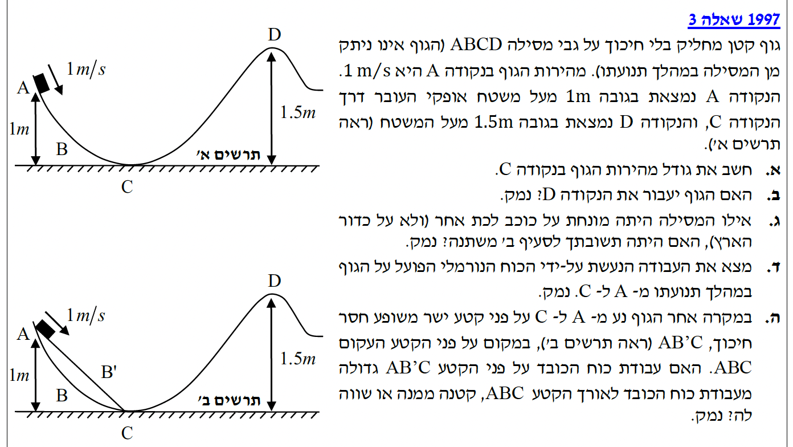
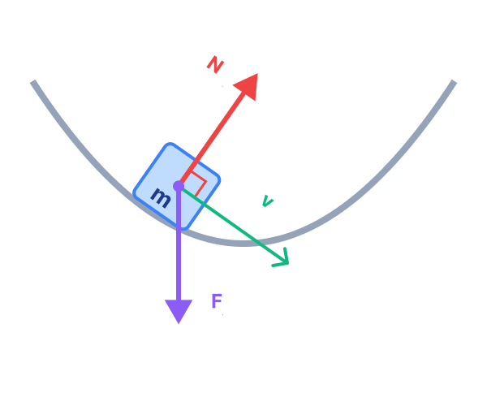

פתרון מודרך: בגרות בפיזיקה 1997, שאלה 4
מכניקה / 5 יח"ל
פתרון צעד-אחר-צעד, כולל ניתוח עבודה ואנרגיה במסלולים.
עודכן:
--- --:--:--

[תמונת השאלה המקורית]
לא נמצאה תמונה בשם question-image.png באותה תיקייה.
מה נתון:
- גובה התחלתי בנקודה A: \( h_A = 1 \text{ m} \)
- גודל מהירות התחלתית בנקודה A: \( v_A = 1 \text{ m/s} \)
- גובה בנקודה C: \( h_C = 0 \text{ m} \) (מישור הייחוס).
- תאוצת הכובד: \( g = 10 \text{ m/s}^2 \) (ציר y חיובי כלפי מעלה).
- הגוף מחליק בלי חיכוך.
* כל הנתונים כבר מבוטאים ביחידות MKS תקניות (מטרים, שניות).
מה מחפשים:
את גודל המהירות של הגוף ברגע שהוא חולף בנקודה C (נסמן כ- \( v_C \)).
נוסחאות ועקרונות בשימוש:
נשתמש בעקרון שימור אנרגיה מכנית. מכיוון שאין חיכוך ועבודת הכוח הנורמלי היא אפס, עבודת הכוחות הלא-משמרים מתאפסת והאנרגיה הכוללת נשמרת.
\( E_k = \frac{1}{2}mv^2 \)
\( U_G = mgh \)
\( W = \Delta E \)
פתרון צעד-אחר-צעד:
נשווה את האנרגיה הכוללת בנקודה A לאנרגיה הכוללת בנקודה C. המסה \( m \) מופיעה בכל האיברים ולכן ניתן לצמצם אותה:
\[ U_A + E_{k,A} = U_C + E_{k,C} \]
\[ mgh_A + \frac{1}{2}mv_A^2 = mgh_C + \frac{1}{2}mv_C^2 \]
\[ gh_A + \frac{1}{2}v_A^2 = gh_C + \frac{1}{2}v_C^2 \]
נציב את הנתונים המספריים:
\[ 10 \cdot 1 + \frac{1}{2} \cdot (1)^2 = 10 \cdot 0 + \frac{1}{2}v_C^2 \]
\[ 10 + 0.5 = 0.5v_C^2 \]
\[ 10.5 = 0.5v_C^2 \implies v_C^2 = 21 \]
\[ v_C = \sqrt{21} \approx 4.58 \text{ m/s} \]
\( v_C \approx 4.58 \text{ m/s} \)
💡 טיפ מורה: אי תלות במסה
שימו לב שהמסה הצטמצמה מהמשוואה! המשמעות הפיזיקלית היא שכל גוף – בין אם זה כדור באולינג כבד או גולת זכוכית קלה – שישוחרר מאותם תנאי התחלה (גובה ומהירות) במסילה ללא חיכוך, יגיע לאותה מהירות בדיוק בתחתית.
מה נתון:
- תנאי ההתחלה בנקודה A: \( h_A = 1 \text{ m}, v_A = 1 \text{ m/s} \).
- גובה בנקודה D: \( h_D = 1.5 \text{ m} \).
- מסת הגוף נסמנת ב- \( m \).
מה מחפשים:
האם האנרגיה הכוללת של הגוף מספיקה כדי להגיע לגובה של נקודה D ולעבור אותה.
נוסחאות ועקרונות בשימוש:
\( E_k = \frac{1}{2}mv^2 \)
\( U_G = mgh \)
חישוב:
תחילה, נחשב את האנרגיה המכנית הכוללת שיש לגוף מתחילת תנועתו בנקודה A (נשאיר את המסה \( m \) כנעלם):
\[ E_{A} = U_A + E_{k,A} = mgh_A + \frac{1}{2}mv_A^2 \]
\[ E_{A} = m \cdot 10 \cdot 1 + \frac{1}{2} \cdot m \cdot (1)^2 = 10m + 0.5m = 10.5m \text{ J} \]
כעת, נבדוק מהי האנרגיה המינימלית הדרושה לגוף רק כדי להימצא בנקודה D (אנרגיה פוטנציאלית בגובה 1.5 מטר):
\[ U_D = mgh_D = m \cdot 10 \cdot 1.5 = 15m \text{ J} \]
נשווה בין האנרגיות: מכיוון ש- \( 10.5m < 15m \), לגוף אין מספיק אנרגיה כוללת כדי להגיע לגובה של 1.5 מטר. לכן, גודל המהירות יקטן לאפס לפני ההגעה, והגוף יחליק חזרה.
לא, הגוף לא יעבור את נקודה D.
💡 טיפ מורה: "תקציב האנרגיה"
אפשר לחשוב על אנרגיה כעל כסף (הצמוד למסה \( m \)). נקודה D דורשת "תשלום" של \( 15m \) רק כדי לעמוד שם, כשלגוף יש "תקציב" של \( 10.5m \) בלבד. לכן אפשר גם לחשב בקלות את הגובה המקסימלי שאליו הגוף מסוגל להגיע כאשר כל התקציב שלו מומר לאנרגיה פוטנציאלית: \( 10.5m = mgh_{max} \implies h_{max} = 1.05 \text{ m} \).
מה נתון:
- כוכב לכת עם תאוצת כובד שונה: \( g_{new} \).
- תנאי ההתחלה זהים: \( v_A = 1 \text{ m/s} \), \( h_A = 1 \text{ m} \), \( h_D = 1.5 \text{ m} \).
מה מחפשים:
האם ייתכן שעל כוכב הלכת האחר (כאשר \( g_{new} \neq 10 \)) הגוף כן יצליח לעבור את נקודה D?
נוסחאות ועקרונות בשימוש:
נשתמש שוב בשימור אנרגיה עם הנוסחאות המוכרות, אך הפעם נשאיר את תאוצת הכובד כפרמטר לא ידוע.
\( E_k = \frac{1}{2}mv^2 \)
\( U_G = mgh \)
חישוב:
נשתמש בעקרון שימור האנרגיה. נשווה את האנרגיה הכוללת בנקודה A לאנרגיה בנקודת השיא אליה הגוף יגיע (בנקודה זו המהירות מתאפסת ולכן \( E_k = 0 \)). נרשום את המשוואה תוך שימוש בתאוצת הכובד החדשה \( g_{new} \):
\[ U_A + E_{k,A} = U_{max} + 0 \]
\[ m \cdot g_{new} \cdot h_A + \frac{1}{2}mv_A^2 = m \cdot g_{new} \cdot h_{max} \]
בדיוק כמו שראינו בסעיף א', המסה \( m \) מופיעה בכל האיברים ולכן ניתן לצמצם אותה משני אגפי המשוואה. לאחר מכן נחלץ את הגובה המקסימלי \( h_{max} \) ונציב את הנתונים הידועים לנו (\( h_A = 1, v_A = 1 \)):
\[ g_{new}h_A + \frac{1}{2}v_A^2 = g_{new}h_{max} \]
\[ h_{max} = \frac{g_{new}h_A + 0.5v_A^2}{g_{new}} = h_A + \frac{v_A^2}{2g_{new}} \]
\[ h_{max} = 1 + \frac{1^2}{2g_{new}} = 1 + \frac{1}{2g_{new}} \]
כעת, כדי שהגוף אכן יעבור את נקודה D, נדרוש שהגובה המקסימלי אליו הוא יכול להגיע יהיה גדול מ- 1.5 מטר (\( h_{max} > 1.5 \text{ m} \)):
\[ 1 + \frac{1}{2g_{new}} > 1.5 \]
\[ \frac{1}{2g_{new}} > 0.5 \implies \frac{1}{g_{new}} > 1 \implies g_{new} < 1 \text{ m/s}^2 \]
כן. אם תאוצת הכובד של הכוכב קטנה מספיק (\( g < 1 \text{ m/s}^2 \)), הגוף יעבור.
💡 טיפ מורה: משמעות הקינטית בכבידה חלשה
על כדור הארץ, המהירות של \( 1 \text{ m/s} \) תורמת רק \( 5 \text{ cm} \) תוספת גובה. אבל בכבידה חלשה מאוד, אותה מהירות קינטית תוכל להזניק את הגוף לגובה עצום, כי כוח המשיכה מתקשה "לעצור" אותו.
מה נתון / תרשים כוחות פנימי:
במהלך התנועה, הגוף נע על משטח עקום. הכוחות הפועלים עליו הם כוח הכובד והכוח הנורמלי. להלן תרשים כוחות בנקודה אקראית:
מה מחפשים:
את עבודת הכוח הנורמלי במהלך התנועה מ-A ל-C.

לא ניתן לטעון את התרשים.
נוסחאות ועקרונות בשימוש:
\( W = F \cos\theta \Delta s \)
פתרון צעד-אחר-צעד:
הכוח הנורמלי פועל תמיד במאונך למשטח המגע. במקביל, וקטור המהירות הרגעית (כיוון ההעתק הרגעי) הוא תמיד משיק למסילה. מכאן שהזווית ביניהם היא תמיד \( 90^\circ \).
\[ \cos(90^\circ) = 0 \implies W_N = \sum N \cdot \Delta s \cdot \cos(90^\circ) = 0 \]
עבודת הכוח הנורמלי היא 0 ג'אול.
💡 טיפ מורה: למה זה חשוב?
העובדה שהכוח הנורמלי אינו מבצע עבודה היא הסיבה שהרשינו לעצמנו להשתמש בחוק שימור אנרגיה מכנית! הכוח הלא-משמר היחיד כאן הוא הנורמל, וכיוון שעבודתו אפס, האנרגיה המכנית הכוללת נשמרת.
מה נתון:
- מסלול 1 (מקורי): המסילה העקומה \( ABC \).
- מסלול 2 (חדש): מסילה ישרה בשיפוע קבוע \( AB'C \).
- התחלה משותפת בגובה 1 מטר, וסיום בגובה 0 מטר.
מה מחפשים:
האם עבודת כוח הכובד במסלול הישר גדולה, קטנה או שווה לעבודתו במסלול העקום.
נוסחאות ועקרונות בשימוש:
כוח הכובד הוא כוח משמר. עבודתו שווה למינוס השינוי באנרגיה הפוטנציאלית (על פי משפט עבודה-אנרגיה לכוחות משמרים).
\( U_G = mgh \)
חישוב:
נחשב את עבודת כוח הכובד עבור שני המסלולים (עבודה שווה להפרש בין האנרגיה הפוטנציאלית בהתחלה לבין האנרגיה הפוטנציאלית בסוף):
\[ W_{G(ABC)} = mgh_A - mgh_C = mg(1) - mg(0) = mg \]
\[ W_{G(AB'C)} = mgh_A - mgh_C = mg(1) - mg(0) = mg \]
העבודה תלויה אך ורק בנקודת ההתחלה ובנקודת הסיום (הפרש הגבהים), ואינה תלויה כלל בצורת המסלול.
עבודת כוח הכובד שווה בשני המקרים.
💡 טיפ מורה: כוח משמר
זוהי ההגדרה המהותית ביותר של כוח משמר (כמו כוח הכובד). המסלול יכול להיות ישר, עקום, בזיגזג או אפילו ספירלה - כל עוד התחלנו באותו גובה וסיימנו באותו גובה, כוח הכובד ביצע בדיוק את אותה כמות עבודה.